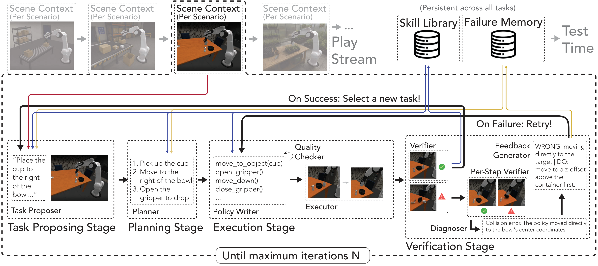
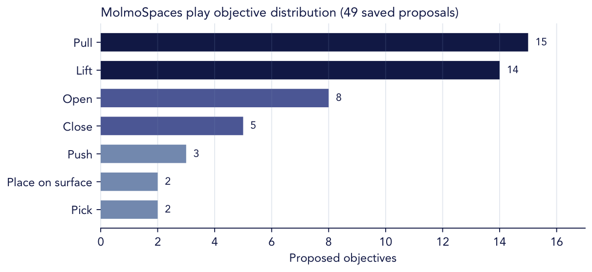
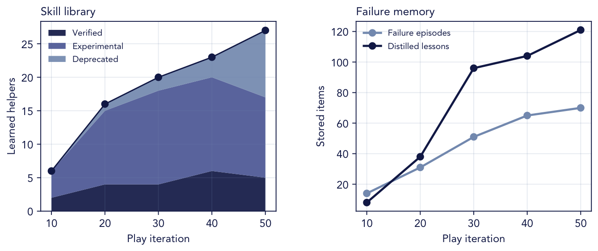

Propose at the frontier
The Task Proposer uses the scene, skill library, and failure memory to seek objectives that balance novelty with learnability.
RATs
A Robotic Agent Team that learns reusable manipulation skills through self-directed play.
RATs proposes novel yet learnable tasks, executes robot-code policies, and turns successful experience into a persistent skill library.
Qualitative results
Simulation and real-world examples from the final paper result reel.
Abstract
Code-as-Policy systems can synthesize executable robot programs, but typically solve each task from scratch. RATs studies a different question: can an agentic robot improve before evaluation by deliberately playing?
During play, RATs proposes novel yet learnable tasks, plans and executes policies, verifies intermediate progress, diagnoses failures, retries with feedback, and distills successful executions into a persistent code skill library. The resulting experience can then support held-out downstream tasks without changing model weights.
Our method
RATs turns interaction into a reusable capability through three connected processes.

The Task Proposer uses the scene, skill library, and failure memory to seek objectives that balance novelty with learnability.
Planning, execution, and verification agents write policies, inspect progress, diagnose errors, and retry with targeted feedback.
Successful behavior becomes reusable code; failed attempts become structured lessons that guide future proposals and executions.
Paper-reported evaluation
The final paper reports gains when the frozen learned skill library is used on downstream manipulation tasks. These values are taken from the paper; the corresponding evaluation artifacts are not present in this local repository snapshot.
LIBERO-PRO
+20.6 pp
23.2% 43.8%
MolmoSpaces
+17.0 pp
21.0% 38.0%
RoboSuite transfer
+8.9 pp
40.3% 49.1%


Inside play
Unlike the evaluation summary above, this section describes locally available play-run artifacts.


A proposal in context
At iteration 15, the proposer connected visible objects, recent attempts, and the current skill library to select a tissue-box lift. Its composite Goldilocks score of 0.6236 favored an objective that was meaningfully new while still reachable with emerging grasp and motion capabilities.
This is the core behavior RATs is designed to encourage: novel enough to teach, grounded enough to succeed.
Resources
Read the final paper and appendix, or inspect the implementation and experiment configuration in the repository.